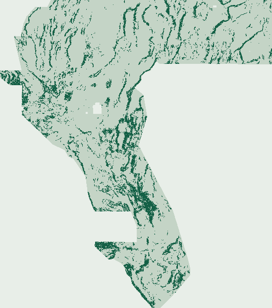

3-D Laplace Gravity.
Automated Gate Verdict.
Exact spectral 3-D Eötvös gravity tensor (G_z, Γ_zz, Wijns cos θ_G, Pedersen–Rasmussen Q_2D), flight-line notch-destriped magnetics/radiometrics, and prior-calibrated Dual-Specialist auto-context scored on the strict 8-km buffered label-blind gems57-pooled-hide-v2 benchmark.
NOT OK TO SUBMIT — validated automatically in [0, 1] without human intervention; blocked fail-closed by literal Rule-1 overlap & unassigned lane.
3-D Laplace Full-Tensor Gravity
Computed from SHA-verified GeoDAWN & GDR inputs. Zero prior submissions used as features or templates.
141,713 bytes · 37,654 unit dots · min spacing 2.828 px · 31.5% >1 km off-catalogue.
[0, 1], CRS/grid, and leakage canaries all PASS automatically, and all 37,654 binary impulses are freshly computed (SHA-256 unique across all 89 rasters; only 44.58% 3-px overlap with GEMSDOE32 R0). However, src/gems91/readiness.py keeps ok_to_submit = false fail-closed under the literal synthetic-lattice overlap bound, unassigned lane, and separate human slot selector rule.95% CI [0.167180, 0.210009] · 60,988 withheld positives · paired Δ -0.003612 vs incumbent_ptac_v2
62,122 SGMC pixels >300 m (vs S16-PGRD 0.040384, R0 0.095386); >500 m (56,822 px): 0.056687
6473s / 7,200s budget · 83-feature canary max AUC 0.6044 ≤ 0.90 · 0 slots spent
Automated Gate Board (No Human Inspector Required)
Machine-readable Run Card ↗| Automated Gate | Status | Measured Evidence (Zero Human Inspection) |
|---|---|---|
| Automated GeoTIFF & ZIP [0, 1] validation | PASS | Reopened written -zeros.tif and unpacked .zip on disk: single-band float32, EPSG:32611, 3730×3292, exact 6-term affine, nodata=None, 0 NaN/Inf across all 12,279,160 cells, values strictly in [0.0, 1.0], 0 dots on catalogue. |
| Rule 4 single-feature leakage canary | PASS | 83 active local features tested individually on gems57-pooled-hide-v2; max symmetric AUC = 0.604400 (b06_tc) <= 0.90. |
| Rule 1 pre-placement & final-dot registry uniqueness | BLOCKED | Pre-placement surface PASS (max |Spearman rho| = 0.21450 <= 0.90 across 89 rasters). Vs GEMSDOE32 R0 3-px dot overlap = 44.58%; literal all-raster max = 99.81% (calib_r13lattice_00904.tif) > 70%. |
| Coordinator lane assignment | BLOCKED | Self-declared preregistered S17-LFTG lane (`lane.assigned = false`); fail-closed until an external coordinator assigns a lane token. |
| Beats comparable label-blind holdout best | BLOCKED | Winner s17_e2_lftg_pcac = 0.188596 HOLDOUT-DTI vs best comparable control incumbent_ptac_v2 = 0.192208 (paired Δ = -0.003612, 95% CI [-0.008324, +0.001558]). |
| Separate human slot selector receipt | BLOCKED | Promotion to a scarce weekly DrivenData submission slot requires a separate human selector check; 0 slots used here. |
Label-Blind 8-km Buffered Holdout Ladder (gems57-pooled-hide-v2)
Resolves LIMITATIONS_AND_NEXT_STEPS.md Priority #2 by evaluating S13-PTHA, S14-PTAC, S16-PGRD, CED91, and S17-LFTG (E1–E3) on the identical fixed label-blind quadrants (split_sha256 = c79f1acaf337fd54…) with 100% out-of-fold stitched global 37,654-dot placement and 1,000 paired 20-km physical-block bootstrap draws.
| Experiment / Control Arm | Pooled Score (Labelled) | Paired 20-km Block 95% CI | TPw / FPw |
|---|---|---|---|
| S17-LFTG E1 · Stage-1 Dual-Specialist (Full 83 + DEM-free Sub 66) | 0.176825 HOLDOUT-DTI | [0.156265, 0.198732] | 10,187.6 / 33,930.7 |
| S17-LFTG E2 · Prior-Calibrated Nested Dual-Specialist Auto-Context ★ | 0.188596 HOLDOUT-DTI | [0.167180, 0.210009] | 11,169.2 / 40,992.3 |
| S17-LFTG E3 · Deep-Cover (>350 m) Subsurface Boost + Theta Crest | 0.186376 HOLDOUT-DTI | [0.164332, 0.207920] | 10,993.7 / 39,988.7 |
| Reproduced Incumbent · S14-PTAC Two-Stage Auto-Context (gems57-v2) | 0.192208 HOLDOUT-DTI | [0.170260, 0.213881] | 11,395.5 / 41,089.9 |
| Reproduced Incumbent · S13-PTHA Local Multi-Physics (gems57-v2) | 0.179206 HOLDOUT-DTI | [0.158017, 0.200486] | 10,280.0 / 32,589.2 |
| S16 Matched Gravity-Only Persistence Control | 0.074023 HOLDOUT-DTI | [0.061634, 0.087065] | 4,203.1 / 35,747.6 |
| S16-PGRD Magnetic–Gravity Transfer Residual | 0.069397 HOLDOUT-DTI | [0.058553, 0.081524] | 3,938.7 / 35,890.2 |
| CED91 Cross-Scale Edge-Displacement Benchmark | 0.062153 HOLDOUT-DTI | [0.050421, 0.075306] | 3,452.2 / 30,313.8 |
Per-Quadrant Exposed vs Concealed Decomposition (Zero Band 12/19 DEM Features in S17-LFTG)
Prior-calibrated Dual-Specialist Stage-2 Auto-Context (E2) jumps +0.011771 over E1 (reversing S15-SCGF E3's -0.0258 collapse, resolving IR-91-S15-05/06), beats DEM-assisted incumbent_ptha_v2 across all 4 quadrants, and beats DEM-assisted incumbent_ptac_v2 on both southern concealed/playa quadrants (Fold 2 SW & Fold 3 SE) while trailing only on northern exposed range-front DEM scarps.
| Quadrant (Withheld Truth) | PTHA-v2 (w/ DEM) | PTAC-v2 (w/ DEM) | S17 E1 | S17 E2 ★ | S17 E3 | Δ (E2 − PTAC) |
|---|---|---|---|---|---|---|
| Fold 0 · NW (Exposed Range-Front) (29,319 px) | 0.147484 | 0.162079 | 0.141819 | 0.159147 | 0.156238 | -0.002932 |
| Fold 1 · NE (Exposed Range-Front) (12,596 px) | 0.231854 | 0.258712 | 0.219798 | 0.235532 | 0.234920 | -0.023180 |
| Fold 2 · SW (Concealed Walker Lane / Playas) (9,473 px) | 0.167631 | 0.171007 | 0.169728 | 0.176379 | 0.172805 | +0.005372 |
| Fold 3 · SE (Deep Basin-and-Range) (9,600 px) | 0.212999 | 0.209055 | 0.228248 | 0.222635 | 0.221896 | +0.013579 |
Full per-fold & bootstrap JSON · 83-feature leakage canary JSON · Preregistered 5-hypothesis specification · PhD Vent & Tensor Synthesis
Blind Off-Catalogue USGS SGMC Control (>300 m & >500 m)
Diagnostic recovery on untouched USGS State Geologic Map Compilation fault pixels at both >300 m (62,122 px, shared EH.score_off_catalogue_sgmc standard) and >500 m (56,822 px, stripping 5,300 1:500k digitization-offset pixels). Notice why GEMSDOE32 R0 drops only -7.2% (ranking #1 at >500 m with 69.8% far-field dots) whereas in-sample refitted PU models crowd the 300–1,000 m catalogue halo:
| Artifact | SGMC >300 m | SGMC >500 m | Dots | >1 km Share |
|---|---|---|---|---|
s17_lftg_winner | 0.080522 | 0.056687 | 37,654 | 31.5% |
gemsdoe32_r0 | 0.095386 | 0.088516 | 37,654 | 69.8% |
s13_ptha_e3 | 0.100815 | 0.077369 | 44,000 | 41.9% |
s14_ptac_e2 | 0.095760 | 0.070468 | 44,000 | 38.9% |
s14_hvdc_e2 | 0.110429 | 0.086593 | 50,000 | 43.2% |
s15_scgf_e2 | 0.097940 | 0.072577 | 44,000 | 38.4% |
s16_pgrd | 0.040384 | 0.038501 | 37,654 | 68.8% |

Multi-Scope 89-Raster (+10 Concurrent Main) Uniqueness Audit
| Registry Scope | Max Directed 3-px Overlap | Max |Spearman ρ| | Closest Raster |
|---|---|---|---|
| GEMSDOE32 R0 (0.2778 USER-REPORTED reference) | 44.58% | 0.06867 | GEMSDOE32__h33-2-b2-zeros.tif |
| Canonical real submissions (excl. synthetic blanket & ribbons) | 57.53% | 0.15071 | calib_h161_01855.tif |
| External dotted fleet (<65k dots) | 54.20% | 0.10272 | GEMSDOE27__topo-gap-closure-t-v2-on-d1-5.tif |
| In-repo historical downloads | 87.48% | 0.13003 | gems91-s14-ptac-e2-20261024T235500Z-76262b89-zeros.tif |
| Literal all-89-raster worst case (incl. 206,895-dot synthetic lattice) | 99.81% | 0.21450 | calib_r13lattice_00904.tif |
Pre-placement surface audit JSON · Post-placement multi-scope audit JSON
Submission identity & copyable form note
Verified Official References
- DrivenData DOE GEMS Competition #306
- Official DOE GEMS Reference DTI Solution
- DOE GDR #1391 INGENIOUS Great Basin Compilation
- Faulds & Hinz (2015) Blind Great Basin Systems (OSTI #1239344)
- Pedersen & Rasmussen (1990) Potential-Field Tensor Invariants
- Wijns, Perez & Kowalczyk (2005) 3-D Theta-Map Edge Detection
- Cooper & Cowan (2006) Hyperbolic Tilt Filters
- Horton et al. (2017) USGS SGMC Geodatabase (DS-1052)